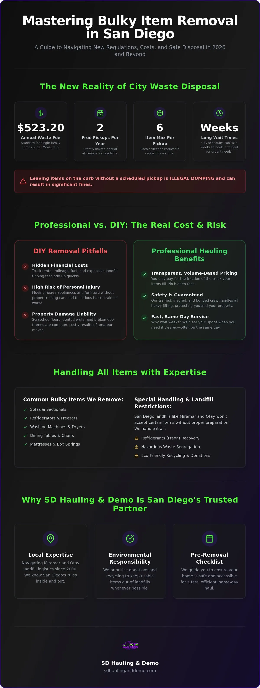

Key Takeaways
- Navigate San Diego's strict disposal laws and avoid fines for illegal curb dumping.
- Save money and prevent physical injury by choosing professional furniture removal san diego over risky DIY methods.
- Understand the "truck load fraction" pricing model so you pay a fair price based on actual volume.
- Use our pre-removal checklist to ensure your home is safe and accessible for a fast, same-day haul.
- Leverage the expertise of a local team that's been navigating Miramar and Otay landfill logistics since 2000.
Table of Contents
- Understanding San Diego Bulky Item Disposal Regulations
- Professional Furniture Removal vs. DIY: The Real Cost
- How Volume-Based Pricing Works for Your Haul
- Pre-Removal Checklist: Preparing Your Home
- Why SD Hauling & Demo is San Diego's Trusted Partner

Understanding San Diego Bulky Item Disposal Regulations
San Diego classifies large items that won't fit in your standard gray trash bin as bulky waste. This category includes everything from worn-out sectionals and dining tables to heavy appliances like washing machines. While it's tempting to drag an old chair to the curb, doing so without a scheduled appointment is considered illegal dumping. The City of San Diego strictly enforces these codes through the "Get It Done" app, and property owners can face significant fines for obstructing sidewalks or alleys. Following the implementation of Measure B, the city now charges a Solid Waste Management Fee of $523.20 per year for most single-family homes — but that doesn't mean curbside service is unlimited or instant.
Current city regulations allow residential customers only two free bulky item pickups per year. Each request is capped at six items. In 2026, wait times for these appointments often stretch several weeks, which isn't helpful if you're in the middle of a move or a renovation. Professional furniture removal san diego provides a necessary alternative for those who can't wait for the city's schedule. Local landfills like Miramar and Otay also have rigid requirements; they won't accept certain items mixed with general trash, and they require specific documentation for commercial-grade disposal.
San Diego Curbside Laws vs. Private Hauling
Placing furniture on the sidewalk is prohibited in almost all San Diego residential zones unless it's the morning of a confirmed pickup. The city also enforces a strict "point-of-origin" rule, meaning they'll only collect items that were generated at that specific address. Private hauling offers a level of flexibility the city can't match. Instead of waiting weeks, you can often secure same-day service. This is vital for apartment dwellers or residents in high-density areas like North Park or Pacific Beach, where space is limited and curb violations are flagged quickly by neighbors and code enforcement officers.
Restricted Items: What Landfills Won't Take
San Diego landfills are highly regulated to prevent environmental contamination. They won't accept hazardous materials like wet paint, motor oil, or industrial chemicals in standard loads. Appliances present a unique challenge; refrigerators and air conditioning units contain Freon and other refrigerants that must be professionally recovered before the unit can be scrapped. If you try to drop these off yourself, you'll likely be turned away at the Miramar scales without a certification of evacuation. Choosing a professional team ensures these items are handled according to state law, with all hazardous components stripped and recycled at the proper facilities.
Professional Furniture Removal vs. DIY: The Real Cost
Thinking about renting a truck to save money? You might want to run the numbers first. A DIY haul involves more than just a base rental fee. You have to account for mileage, fuel, and the tipping fees charged at the scale house. When you add up the hours spent driving to San Diego Environmental Services Department facilities and waiting in line, the "free" weekend project quickly becomes an expensive headache. Your time has value, and a single furniture run can easily consume an entire afternoon. If you're looking for reliable furniture removal san diego, choosing a local expert helps you avoid these common pitfalls.
Physical safety is another major factor. Moving a refrigerator or a heavy oak dresser isn't just difficult; it's dangerous. Homeowners often underestimate the weight of modern appliances, leading to back strains or crushed fingers. Professional furniture removal san diego teams handle these items daily. They know the mechanics of lifting and have the physical conditioning to move heavy loads without risking a trip to the emergency room. Why risk a permanent injury for a temporary task?
The Risk of Property Damage During Indoor Removal
Amateur moves often leave lasting marks on a home. Scuffed drywall, chipped door frames, and deep scratches on hardwood floors are common DIY casualties. Professional crews use specialized equipment like heavy-duty dollies, shoulder dollies, and floor runners to prevent these issues. Being bonded and insured means the company carries specific liability coverage and workers' compensation to protect your property and finances from any accidents during the job. It's the difference between a stressful afternoon and a seamless transition.
Environmental Responsibility: Recycling and Donations
What happens to your old items matters. We don't just dump everything at the landfill. Responsible haulers sort through every load to identify pieces that can be diverted to San Diego donation centers. Usable furniture finds a second life with local families instead of taking up space in the Miramar landfill. For broken appliances, the process involves stripping the units for recyclable metals like copper and aluminum. This methodical approach reduces the overall carbon footprint by optimizing truck routes and ensuring that only true waste reaches the final disposal site — a cleaner, more efficient way to manage property transitions while supporting the local circular economy.
How Volume-Based Pricing Works for Your Haul
Pricing for furniture removal san diego shouldn't be a mystery. Most reputable local haulers use a volume-based system. This means you only pay for the space your items occupy in the truck. We break this down into fractions: a quarter-load, a half-load, or a full truckload. This model is fair because it scales with your specific needs. Whether you have a single armchair or a three-bedroom estate, the price reflects the actual physical footprint of your haul — an efficient way to ensure you aren't overpaying for a half-empty truck.
A professional quote is all-inclusive. It covers the labor of the crew, the fuel for the truck, and the mandatory tipping fees at local disposal sites. You won't see separate line items for stairs or heavy lifting. Getting a firm price before the work begins is essential for your peace of mind. While phone estimates provide a ballpark range, on-site assessments are far more accurate. A quick visual inspection allows the crew to see exactly how items will stack and nest together to save you space and money.
Estimating Your Furniture Volume
How many couches fit in a standard hauling truck? Usually, a full truck can hold about six to eight standard-sized sofas. If you're clearing out a small apartment, you're likely looking at a quarter or half-load. Appliances like refrigerators or washing machines are often handled differently. Because of their weight and specific recycling laws, they might carry a dedicated surcharge. To lower your costs, group smaller items together in boxes. This allows our team to stack them efficiently and maximize every cubic foot of truck space.
Avoiding Hidden Fees and Surcharges
Watch out for low-cost "man with a van" ads on social media. These often come with hidden fees for fuel, mileage, or "long carries" that weren't mentioned upfront. A professional service provides a single, transparent price. For massive projects like whole-home cleanouts, a flat-rate project quote is often the most cost-effective choice. It simplifies the billing process and ensures there are no surprises when the job is done. Choosing a local San Diego partner means you're getting a price that reflects local disposal costs without the franchise markups or hidden surcharges.
Pre-Removal Checklist: Preparing Your Home
Efficiency starts before the truck arrives. While our crews handle the heavy lifting, a little preparation ensures the job goes smoothly and quickly. Start by clearing a wide, unobstructed path from the items to the nearest exit. Remove small rugs, floor lamps, or wall decor that could be bumped during the move. A clear egress isn't just about speed; it's a safety requirement for moving heavy furniture through tight spaces. If you've scheduled furniture removal san diego, having the route ready means we can get in and out in record time.
Safety extends to everyone in the house. Keep pets and small children in a separate room or a fenced yard while the crew is working. Heavy appliances and bulky sofas can create blind spots for movers, and a stray pet underfoot is a recipe for an accident. Also, take a moment to clearly mark your items. Use "Toss" or "Haul" stickers on everything intended for the truck. This simple step prevents the accidental removal of a sentimental piece or a neighbor's borrowed chair during a chaotic cleanout.
Appliances require specific technical prep. Our teams are experts at hauling, but we aren't licensed plumbers or electricians. You must disconnect all water lines, gas connections, and electrical plugs before we arrive. For gas ranges or dryers, ensure the valves are shut off completely.
Preparing Specific Bulky Items
Some items have unique requirements. In San Diego, mattresses often need to be bagged or wrapped in plastic to prevent the spread of pests and to keep recycling centers clean. For refrigerators and freezers, you must empty all contents and defrost them at least 24 hours in advance. This prevents leaks and odors during transport. If you have an oversized dining table or a modular sectional that won't fit through a standard door frame, disassemble it beforehand. This saves time and ensures your door frames stay pristine.
Logistics for Gated Communities and Apartments
Living in a managed community requires extra coordination. Check with your San Diego HOA about truck parking restrictions or specific hours for service providers. If you're in a downtown high-rise, booking the service elevator is a must. Most buildings require a specific time slot for large hauls to avoid clogging passenger lifts. Provide our crew with clear access instructions, including gate codes or designated loading zone locations. Managing these details ahead of time makes your furniture removal san diego experience effortless and professional.
Why SD Hauling & Demo is San Diego's Trusted Partner
Experience matters when you're inviting a crew into your home or business. SD Hauling & Demo has served the San Diego community since 2000, building a reputation for reliability that national franchises can't match. We're a locally owned and operated business, not a remote call center. When you call us, you're talking to neighbors who know the specific logistics of San Diego neighborhoods, from the tight streets of La Jolla to the industrial zones of Miramar. This local expertise allows us to offer genuine same-day service for urgent furniture removal san diego needs, ensuring your property is cleared without delay.
We pride ourselves on being a versatile partner for property management. Our team handles single-item pickups with the same level of care as whole-home cleanouts or complex interior demolition projects. We don't just haul away your old sofa; we bring order back to your environment. Whether you're preparing an ADU site or clearing out an office, our no-nonsense attitude ensures the job is done efficiently and safely.
Professional Credentials You Can Trust
Credentials are the foundation of a professional service. We are fully bonded and insured, which means your property is protected from the moment we step through the door. Unlike many independent haulers you might find on social media, we hold a D-63 license. This specialized contractor's license differentiates us by proving we meet California's rigorous standards for demolition and hauling safety. Our reputation for punctuality is built on respect for your schedule. We arrive in uniform, ready to work, and equipped with the specialized straps and dollies needed to protect your floors and walls from damage.
Get Your Free San Diego Removal Quote Today
Starting your project is a simple, transparent process. We provide free on-site assessments to give you an accurate, volume-based price before any lifting begins. Once you approve the quote, our team handles the entire process, from careful extraction to the final sweep-up of the area — we don't consider the job finished until your space is clean and ready for its next use.
Reclaim Your San Diego Living Space Today
Clearing out heavy furniture doesn't have to be a multi-week ordeal involving city waitlists and physical strain. You now understand the complexity of local 2026 regulations and why volume-based pricing is the most transparent way to manage your haul. By following our pre-removal checklist, you've set the stage for a fast, damage-free experience that keeps your home's interior pristine. Professional removal isn't just about convenience; it's about the peace of mind that comes with knowing the job is handled legally and safely.
SD Hauling & Demo has been the trusted local expert for furniture removal san diego since 2000. Our fully bonded, licensed, and insured crews provide the professional reliability you need to bypass the stress of the Miramar scales and the physical risk of moving appliances. We pride ourselves on a no-nonsense approach that brings immediate order to your property. With same-day service available, you don't have to live with clutter for another minute.
Frequently Asked Questions
How much does furniture removal cost in San Diego?
Pricing is based on the volume your items occupy in our truck. We use a truck load fraction model, so you only pay for the space you actually use, whether it's a quarter-load or a full truckload. This system provides a fair, transparent price compared to flat rates. We provide a firm, all-inclusive quote during our on-site assessment before any lifting begins.
Do you offer same-day furniture removal near me?
Yes, we provide same-day furniture removal san diego for urgent projects throughout the county. We know that move-out dates or renovation deadlines don't always wait. Our local crews are positioned to respond quickly to your request. Contact us early in the day to secure a slot and get your space cleared before the sun goes down.
Can you remove a refrigerator that still has Freon?
We handle refrigerators and air conditioning units that still contain Freon or other refrigerants. These appliances require specialized disposal because California law mandates the safe recovery of hazardous gases. Our team ensures your old units are transported to certified facilities for proper evacuation and recycling. You don't have to worry about the legal or environmental complexities of appliance disposal.
What happens to my furniture after you pick it up?
We sort every load to ensure that usable items find a second life. Furniture in good condition is often diverted to local San Diego donation centers to help families in need. For items that are broken or worn out, we prioritize recycling centers that process wood, metal, and plastic. Our goal is to minimize the amount of waste reaching local landfills.
Do I need to be home for the furniture removal service?
You don't necessarily need to be present as long as we have clear access to the items. Many residents leave furniture in a garage or driveway for easy pickup. If the items are inside, you can coordinate entry through a property manager or a lockbox. Simply ensure all items intended for removal are clearly marked to prevent any confusion during the process.
What's the difference between junk removal and bulky item pickup?
Junk removal is a private, on-demand service that includes labor, hauling, and immediate disposal for any volume of items. Bulky item pickup is a city-provided service that's limited to two appointments per year with a six-item cap. Private furniture removal san diego offers the speed and flexibility needed for whole-home cleanouts that the city's schedule can't accommodate.
Is SD Hauling & Demo insured for indoor furniture removal?
Yes, we're fully bonded, licensed, and insured for all indoor and outdoor projects. This coverage protects your property and our workers in the rare event of an accident. Our crews use professional-grade dollies and straps to navigate tight corners and stairs safely. You can trust that we prioritize the integrity of your home's walls and floors during every haul.
Can you handle furniture removal for commercial offices in San Diego?
We offer comprehensive office and commercial junk removal for businesses of all sizes. Our team is equipped to handle heavy desks, cubicle partitions, and large filing cabinets. We understand the need for efficiency in a business environment and work quickly to minimize disruption to your staff. Whether you're relocating or upgrading your office furniture, we provide the professional logistical support required.